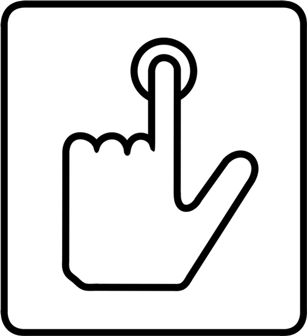
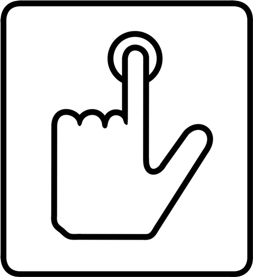
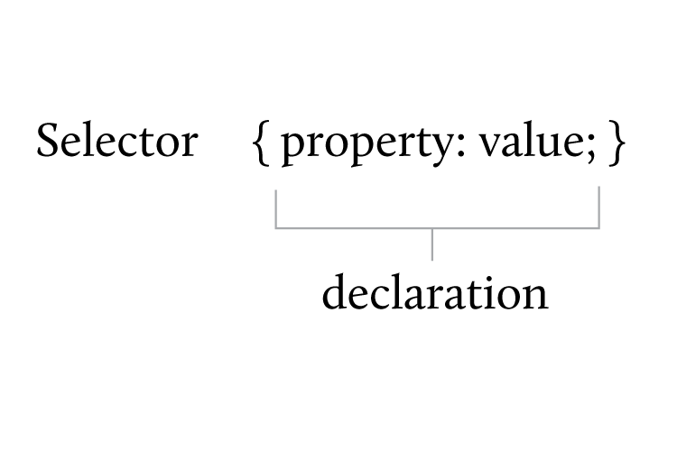
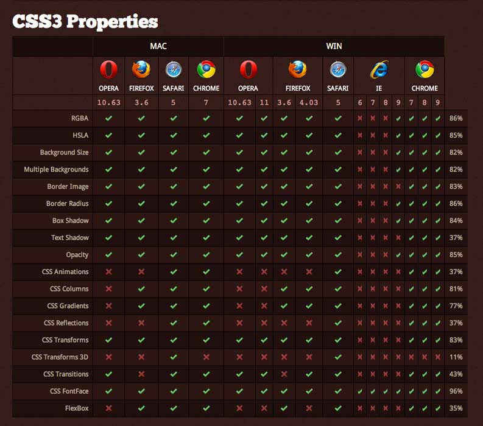

NOTE: This is built for use use in Firefox, Chrome, Opera & Safari.Use your keyboard directional arrows to advance the slides.
There are no controls for iOS & IE doesn’t work at all.
By Jen Strickland | @inkpixelspaper

NOTE: This is built for use use in Firefox, Chrome, Opera & Safari.Ink Pixels Paper is my tiny design shop, providing communication services for non-profit, small and corporate businesses – design & production for books, collateral, signage, tradeshow graphics; interface & experience design for applications; design & development for websites.
This is my first time presenting on a web topic. I’m a performing independent musician & exhibiting visual artist, but… frankly, I’m still nervous!

<form> <ul> <li><a href="#">Link</a></li> <li><input type="submit" value="Submit"/></li> <li><button type="submit">Button</button></li> </ul> </form>
a.link { font-size:200%; }
a:hover.link, a:focus.link
{ color:#fff; text-decoration:underline; }
button, input
{ background:#fff; font-size:48px; padding:.1em .5em; }
button:hover, input:hover, button:focus, input:focus
{ background:#444; color:#ccc; }
button:active, input:active
{ background:#222; color:#000; }
CSS allows for color, border, backgrounds, & text replacement.
Technically, even CSS2.1 isn’t an approved spec.
-moz-border-radius:1em; -o-border-radius:1em; -webkit-border-radius:1em; border-radius:1em;

P Tag
I hope you enjoyed the presentation, & thanks for your attention.
I prefer not to take onstage questions after my talks. Trust me, I do want to talk with you — but I believe onstage Q&A is a flawed format. It forces others to sit through questions that may not be relevant. It’s slow and awkward (“Hold on, we’ll get you a microphone”). It encourages speakers to issue trite diagnosis, not truthful complexity.
Rather than perpetuate this tired ritual, find me afterwards.
Let’s talk in person — it’s far more fun.
Thanks,
Jen@inkpixelspaper.com | @inkpixelspaper